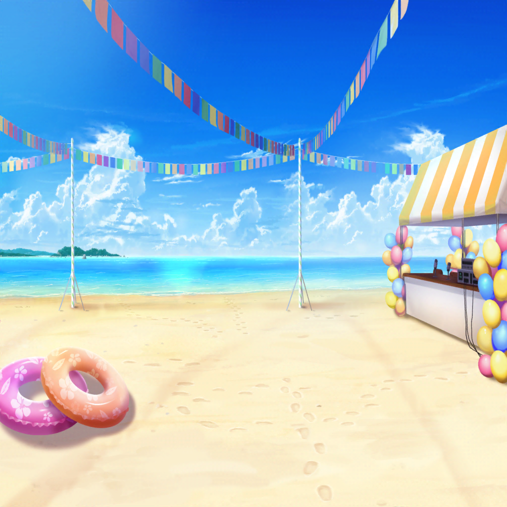

スイカ割り大会 本番
浜辺
有咲
つ、ついに本番かよ……
こんなイベントとは言え、
なんかやたらと緊張してきたんだけど……
イヴ
いよいよですね、アリサさんっ！
ごブウンをお祈りしています！
たえ
有咲、頑張ってね！
有咲ならきっと大丈夫だよ！
はぐみ
うん！ はぐみも大丈夫だと思う！
あーちゃんならできるよ！
こころ
あたしも有咲が優勝すると思うわ！
優勝して、お腹いっぱいスイカを食べましょうね！
有咲
つーか、誰か一人くらい根拠を示してくれって！
根拠を……っ！
まりな
次は本日、飛び入り参加の花咲川女子学園チームです！
所定の位置についてください！
有咲
は、はい！
有咲
（うわ～……ついに順番が来ちゃったし……）
まりな
それでは、アタッカーの方……
回転……スタート！
イヴ
アリサさん、頑張ってください……っ！
有咲
（ダメだ、ちゃんと集中しないと……！）
まりな
……さーん、しーい、ごー……と３分の２！
では、スタート！
有咲
よ、よ、よし……っ！？
いくぞ……っ！
……って……っ！
イヴ
あ、アリサさん！？ 大丈夫ですか！？
はぐみ
わ、あーちゃん、いきなり転んじゃった！？
有咲
（や、やっべ……っ！ 足がもつれて……）
有咲
（……え？ スイカがあった場所ってどこだ？
全然方向がわかんねーんだけど！？）
イヴ
アリサさん！ もう少し左です！
イヴ
みなさんも全力で声を出しましょうっ！
はぐみ
イヴちん……！
そうだね、はぐみ達もサポーターとして全力勝負しなきゃっ！
たえ
有咲、大丈夫。
まだ時間はたっぷりあるよ！
イヴ
アリサさん、その調子ですっ！！
頑張ってください！！
有咲
（そっか……みんなの声を聞けば……）
はぐみ
あーちゃん、もう一歩右だよっ！
有咲
み、右……？
こ、こんな感じで……いいのか？
こころ
とってもいいわ、有咲！
スイカが有咲を呼んでるわよ！
その声をよく聞いてみて！
有咲
（す、スイカの声……意味わかんねーけど……
い、一応聞いてみるか……っ）
たえ
いいよ、有咲！ あと一歩！
有咲
あと一歩……
こ、これくらい？
はぐみ
いいよ！ あーちゃん！
あ、けど、あとちょっとだけ左に向いたほうがいいかも！
有咲
ちょっと左だな！？ こんな感じか！？
イヴ
そこです！ アリサさん！
はぐみ
あーちゃん、いっけー！
たえ・こころ
有咲、そこだよ！
有咲、そこよ！
イヴ
アリサさん！ 自分と仲間を信じてください！
それこそが……ブシドーですっ！！！
有咲
ブシドー……！？
有咲
自分と仲間を、信じて……
よ、よくわかんねーけど……っ！
有咲
ええい、ブシドーっ！！！
イヴ
アリサさん！ お見事でしたっ！
見事にスイカが割れましたね！
有咲
だ、だよな！？ 私も、目隠しとってびっくりしたし！
真っ二つだっただろ！？
はぐみ
あーちゃん、すごかったー！
キレイにスイカ割れてたもん！
あの割れ方は得点高いってまりなさん言ってたよ！
有咲
なんかね、手応えがすっごいあった！
芯に当たったっていうか！？
もー、ブシドー！ って感じだったよ！
たえ
有咲にこんな才能があるって、知らなかったよ
こころ
有咲！
あなたってきっと、スイカ割りをするために生まれてきたのね！
有咲
いやー、最後はちょっとスイカの声？
聞こえた感じした！
イヴ
私もアリサさんを見習って、
もっともっとブシドーを磨こうと思います！
有咲
あははははっ！
あー、楽しかったー。
スイカ割りって、意外とおもしろいなー
たえ
ははっ。
なんだか有咲、今日はとっても素直だね
有咲
……っ！？
たえ
有咲が嬉しそうにしてると、
私まで嬉しくなるよ
有咲
は、はぁ！？ な、なんだよ、急に！
べ、別に私は……
イヴ
アリサさん！ ハグしましょう！
有咲
わわ、そ、それは！
ちょ、ちょっと待ってって……っ！